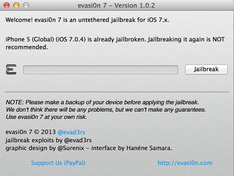
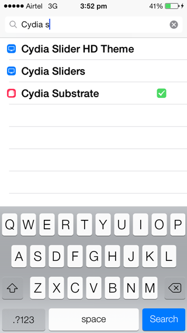
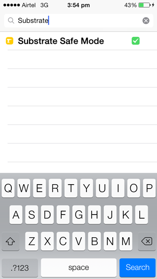
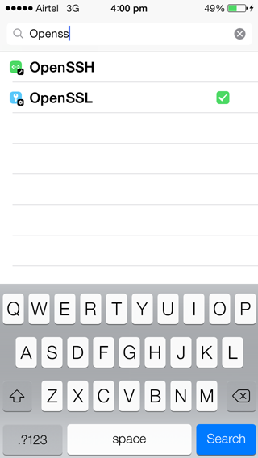
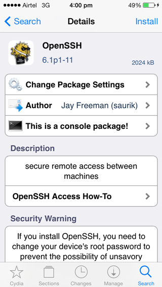
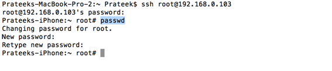
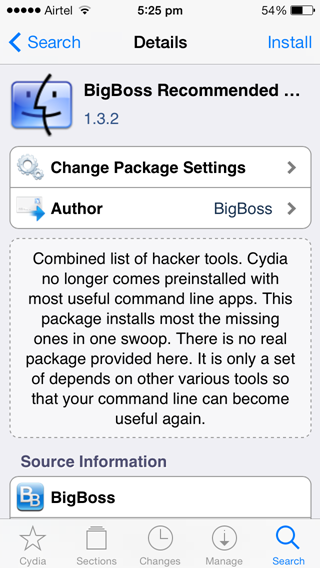
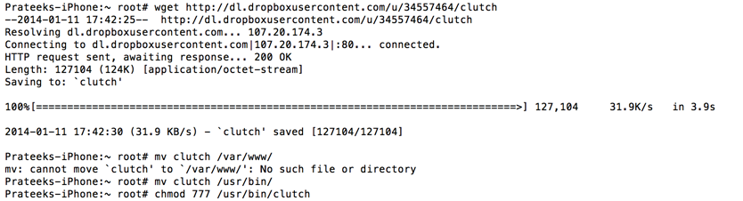
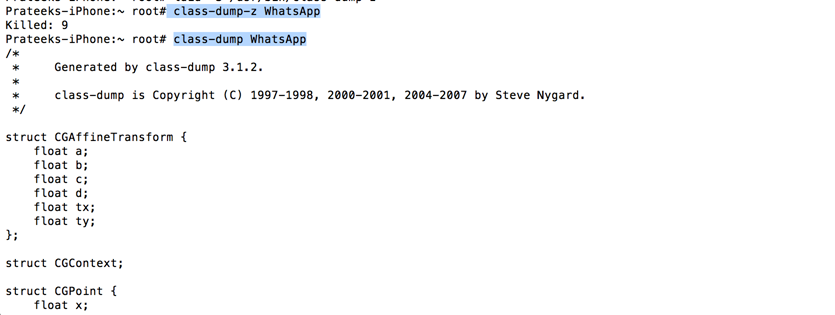

In this article we will look at how we can set up a mobile pentesting platform on our device with the new IOS 7 jailbreak. There has been quite a lot of discussion on the web about whether it is safe for a user to jailbreak their devices yet. However, if you are really interested in IOS pentesting then there is no absolutely no reason now why you shouldn’t jailbreak your device. Since this jailbreak was launched by the evasi0n team without any prior notice to the developers, most of the tweaks didn’t work with IOS 7 when the jailbreak was first made public. One of the most critical pieces of software Mobile Substrate which is used in many tweaks initially didn’t work on IOS 7. However, things have settled down since then. An update for Mobile Substrate (named Cydia Substrate) was released a few weeks back and many tweaks were also updated for IOS 7. Some things however don’t work well on IOS 7 devices. In this article, we will look at all those things which we need to do to set up a proper pentesting platform on a device running IOS 7.
How to Jailbreak
You can jailbreak your device by downloading the evasi0n software from evasi0n.com . The current jailbreak supports devices upto the latest IOS version, which is 7.0.4. Once it is downloaded on your computer, just connect your device to your computer through USB, open evasi0n and click on Jailbreak to start the jailbreak process. In my case, the device is already jailbroken so i don’t need to jailbreak it again.

Follow the instructions given by the software. Once the jailbreak is finished, you will see a new application named Cydia installed on your device. The very first thing you need to do is to install new version of Mobile Substrate for IOS 7 (called the Cydia Substrate) and Substrate safe mode. Mobile Substrate is a very important piece of software as most of the tweaks depend on it to function properly. Substrate safe mode allows a device to reboot in a safe mode without any of the tweaks for a situation where tweaks may cause problems for your device and the device starts disfunctioning.
Searching for Cydia will give you Cydia Substrate.

And searching for Substrate will give you Substrate Safe Mode. Install both of these by tapping on them and then tapping on Install.

Once this is installed, the next thing you need to do is to install OpenSSH on your device. This will help you connect to your device using ssh. Just searching for OpenSSH will give you the desired result.

Tap on it and then tap on Install. This will install OpenSSH on your device.

Now the next thing to do is to change your SSH password. You can find the IP of your device by going to the Settings app, selecting Wifi, and then tapping on the info button on the network you are connected to. By default, the password for both mobile and rootuser is alpine. We must change this password.

Now, install the Big boss recommended tools package from Cydia. It contains most of the essential tools that you need to work in a jailbroken environment.

Now you need to install some other essential tools. Let’s start with clutch. Clutch can be used to decrypt the applications that are downloaded from the App Store. You can download clutch from this url. Then move it to /usr/bin and make sure to give it executable permissions.

Note – If you ever get an error like this while running a command that requires root privileges…
E: Could not get lock /var/lib/dpkg/lock – open (35: Resource temporarily unavailable) E: Unable to lock the administration directory (/var/lib/dpkg/), is another process using it?
This means that the Cydia app is running on your device and is in foreground. Cydia runs with root privileges and hence if you try to run another process with root privileges, it is not able to get a lock on it. Press the home button on your device to take the Cydia app to background. Now you can run the terminal command that requires root privileges.
Another imporant tool is class-dump-z. As of today (Jan 10, 2014), the original class-dump-z doesn’t work with IOS 7 devices. However, you can see the class information using the old tool class-dump.

As far as cycript is concerned, it also gives a Segmentation fault when run against IOS 7 devices. However, if you install an older version, i.e 0.9.458 or previous, it does seem to work but with limited functionality.So assuming there was some issue with Mobile Substrate not working properly, i jailbreaked my device again. After this, i was able to successfully run cycript properly with complete functionality.
You can download Cycript from here and then use the dpkg -i packageName command to install Cycript.
You might also want to install gdb on your device. A proper version of GDB can be found here
So these are all the things that you need to setup a Mobile Pentesting platform on IOS 7. If you have any suggestions, please add it in the comments and i will include it in the article. In the next article, we will learn about Application Patching using a pretty awesome tool called Hopper.